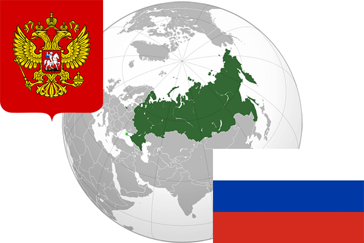

To`liq nomi: Rossiya Federatsiyasi
Region: Sharqiy Yevropa
Qonunchilik shakli: Federativ respublika
Mustaqillik kuni: 24 avgust 1991
Poytaxt: Moskva
Maydoni: 17,098,246 km²
Chegaradosh davlatlari: Norvegiya, Finlandiya, Estoniya, Latviya, Litva, Polsha, Belorusiya, Ukraina, Gruziya, Ozarbayjon, Qozog’iston, Xitoy, Mo’g’uliston, Shimoliy Koreya, Yaponiya, AQSh
Aholisi: 146 880 432 (2018-yil 1- yanvar)
Aholi zichligi: 8,56 /км²
Aholining o`rtacha yoshi: 70,37 yil
Rasmiy tili: Rus tili
Dini: Xristian
Pul birligi: Rubl
Telefon prefiksi: +7
Internet domen: .ru
Xalqaro tashkilotlarga a`zoligi: BMT, SHHT, MDH, G20,
Dengiz va okeanlarga chiqishi: Shimoliy Muz okeani
YIM: Butun: $1,28 trln (2016-yil) Jon boshiga: $8 946
Yirik shaharlari: Moskva, Sankt-Peterburg, Yekaterinburg, Samara, Nijniy Novgorod, Chelyabinsk, Rostov, Saratov, Novosibirsk